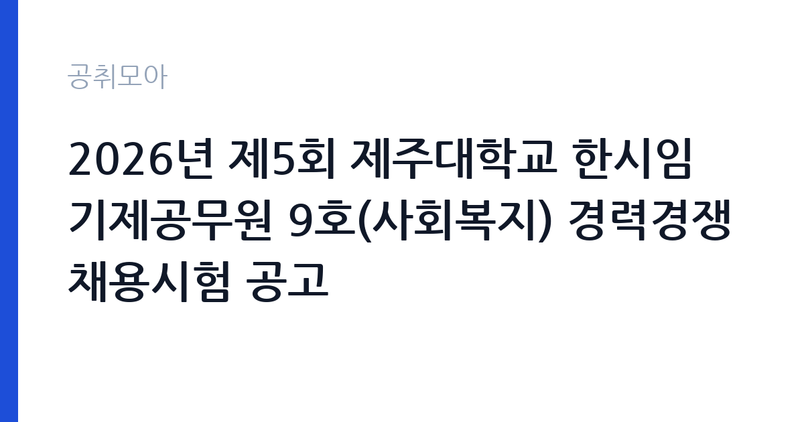

[국가기관] 2026년 제5회 제주대학교 한시임기제공무원 9호(사회복지) 경력경쟁채용시험 공고
제주대학교 · 제주 · 마감 2026-11-06 (D-10) · 출처 나라일터

한눈에 보는 모집 조건
| 기관 | 제주대학교 |
|---|---|
| 공고명 | 2026년 제5회 제주대학교 한시임기제공무원 9호(사회복지) 경력경쟁채용시험 공고 |
| 고용형태 | 임기제 |
| 근무지 | 제주 |
| 게시일 | 2026-10-27 |
| 마감일 | 2026-11-06 (D-10) |
지원자격, 이렇게 읽으세요
- 한시임기제 9호(사회복지) 1명
- 접수 ~2026-11-06 마감
- 세부 조건은 원문 공고문 확인
임기제공무원은 공무원 신분이지만 임용 기간이 정해져 있습니다. 전문성이 필요한 업무에 채용되며 임용 기간과 연봉등급이 공고문에 명시됩니다. 임기 중에는 공무원으로서의 복무 규정과 이해충돌 방지 의무가 적용됩니다. 이번 공고는 제주대학교에서 직접 진행하는 자체 전형으로, 응시자격과 제출서류는 공고문에 항목별로 제시됩니다. 사회복지 직무는 사회복지사 자격이 필수인 경우가 대부분입니다. 1급과 2급 중 어느 급수를 요구하는지, 자격 취득 예정자도 지원 가능한지 확인해야 합니다. 관련 기관 근무 경력과 사례 관리 경험은 우대 사항으로 자주 등장합니다. 사업 수행 인력은 계약 기간이 정해진 경우가 많아 근무 기간과 업무 범위를 함께 확인하십시오. 서류는 접수 마감 이후 보완이 되지 않으므로 자격 요건과 증빙 서류를 마감 전에 모두 갖춰야 합니다. 공고문에 명시된 우대 사항은 해당 여부를 확인해 증빙을 첨부해야 가점이 반영됩니다. 응시 자격 판단이 애매하다면 접수 전에 채용 담당 부서로 문의하는 편이 안전합니다. 서류 제출 후에는 소명 기회가 없습니다.
이 공고의 포인트
이 공고의 첫 번째 포인트는 고용 형태입니다. 임용 기간이 정해져 있지만 공무원 신분으로 복무 규정이 적용되고, 전문성이 인정되면 재임용이나 유사 직위 지원에 도움이 됩니다. 두 번째는 업무 범위가 명확하다는 점입니다. 사회복지 직무로 채용되므로 배치 이후 담당 업무가 크게 흔들리지 않습니다. 세 번째는 근무지입니다. 제주 지역 근무로 수도권 공고에 비해 지원자 분포가 넓지 않아 상대적으로 경쟁이 분산되는 경우가 있습니다. 직무 특성이 분명해 본인의 경험과 맞는지 빠르게 판단할 수 있습니다. 다만 선발 인원이 1명으로 많지 않아 자격을 갖춘 지원자가 몰리면 경쟁률이 높아질 수 있습니다.
전형은 어떻게 진행되나
1차 서류, 2차 면접의 2단계로 진행되는 구성이 일반적입니다. 서류에서는 자격 요건과 경력 증빙을 확인하고, 면접에서는 실제 업무 수행 능력과 조직 적응을 봅니다. 직무에 따라 필기시험이나 실기, 컴퓨터 활용 시험이 추가되기도 하므로 공고문의 전형표를 먼저 확인하십시오. 단계별로 합격자만 다음 전형에 응시할 수 있고, 단계마다 응시 자격 확인 서류를 다시 제출해야 하는 경우가 있습니다. 최종합격자 발표 후에는 신원조회와 채용 신체검사가 남아 있습니다. 응시 수수료가 있는 경우 환불 기준과 기한이 정해져 있으니 접수 전에 확인하십시오.
이런 분께 추천해요
- 사회복지사 자격을 보유한 분
- 사례 관리와 기관 연계 경험이 있는 분
- 민감 정보를 엄격히 관리할 수 있는 분
지원 전 체크리스트
- 응시자격 요건과 경력 기준을 충족하는가 — 경력은 증명서로 입증해야 합니다
- 임용 기간과 연봉등급, 근무 시간 조건을 확인했는가
- 제출서류 목록을 모두 준비했는가 — 누락 시 서류 단계에서 탈락합니다
- 접수 마감 2026-11-06 이전에 접수 방식을 확인해 제출했는가
모집 일정과 제출 타이밍
공고 게시일은 2026-10-27, 접수 마감은 2026-11-06입니다. 준비 기간은 약 10일로 서류 준비와 자격 증빙을 함께 처리하기에는 넉넉하지 않은 편입니다. 첫 이틀 안에 공고문과 첨부 서식을 내려받아 요건을 확인하고 남은 기간에 증빙 서류를 발급받는 일정이 현실적입니다. 면접은 서류 합격자 발표 후 짧은 간격으로 진행되는 경우가 많으므로 서류 제출과 동시에 면접 준비를 시작하는 편이 안전합니다. 마감일에는 접수 시스템이 몰리므로 하루 전까지 제출을 마치는 것이 좋습니다. 공휴일이 끼어 있으면 증명서 발급이 늦어질 수 있으니 발급 일정을 앞당기십시오. 제주 근무지는 도내 이동 거리가 길고 숙소 제공 여부가 총비용에 큰 영향을 줍니다. 마감까지 2주 안팎이 있어 준비할 시간은 있지만 미루면 촉박해집니다. 선발 인원이 한두 명 수준이라 지원자 개개인의 서류 완성도가 그대로 평가에 반영됩니다.
직무 이해하기: 국가기관
교육기관은 학교 교육과 교원 연수, 교육 행정을 담당합니다. 교육청은 관내 학교를 지원하고, 대학은 학사와 연구, 학생 지원 업무를 운영합니다. 예산과 인사 규정이 교육부 지침과 자체 규정을 함께 따르므로 절차가 엄격합니다. 사회복지 업무는 대상자의 상황을 평가해 필요한 서비스를 연결하는 일입니다. 상담과 초기 상담 기록, 서비스 신청과 자격 확인, 사례 관리를 진행하고 관련 기관과 연계합니다. 사업에 따라 가정 방문과 전화 상담 비중이 달라지고, 위기 상황에서는 응급 지원과 보호 체계 연결이 필요합니다. 시범사업 수행 인력은 사업 지침에 따라 대상자 발굴과 결과 보고서 작성까지 맡습니다. 개인 정보와 민감 정보를 다루므로 보안 규정 준수가 엄격합니다. 업무는 혼자 처리하기보다 부서 단위로 나눠 진행되므로 담당 구역과 협업 범위를 입사 초에 확인하는 것이 중요합니다. 현장 업무와 사무 업무의 비중은 기관의 사업 일정에 따라 계절별로 달라집니다.
자기소개서 작성 팁
지원서는 사례 단위로 작성하면 설득력이 높습니다. 대상자 상황, 본인이 판단한 개입, 연계한 자원, 결과를 순서대로 쓰십시오. 사업 특성상 대상자 발굴과 사후 관리가 중요하므로 관련 경험을 앞세우십시오. 짧은 계약 기간에도 사례가 끊기지 않도록 인수인계 계획을 밝히면 신뢰를 얻습니다. 구성은 지원 동기, 직무 경험, 기여 방안 순서가 무난합니다. 지원 동기는 제주대학교의 사업 중 본인이 관심을 가진 부분을 한 가지로 좁혀 서술하고 추상적인 표현은 줄이십시오. 직무 경험은 담당했던 업무와 규모, 결과를 수치로 제시하면 설득력이 올라갑니다. 기여 방안은 입사 후 첫 3개월과 1년 계획으로 나눠 쓰면 준비도가 드러납니다.
면접 준비 포인트
면접에서는 사례 판단과 자원 연계 능력을 봅니다. 대상자가 서비스 기준을 충족하지 못할 때 어떻게 설명하고 대안을 제시하는지, 여러 기관이 얽힌 사례를 어떻게 조정했는지 묻습니다. 민감 정보를 다루는 태도와 기록 관리 방식도 평가 요소입니다. 사업 지침을 어디까지 읽었는지 확인하는 질문도 나옵니다. 답변은 상황, 판단, 조치의 순서로 정리하면 전달이 분명해집니다. 모르는 질문에는 모른다고 밝히고 확인 방법을 제시하는 편이 억지 답변보다 낫습니다. 마지막에는 근무 의사와 함께 2026-11-06 이후 일정에 언제든 응할 수 있다는 점을 전달하십시오. 답변 시간이 짧게 정해져 있는 경우가 있으므로 핵심 문장을 먼저 말하고 근거를 붙이는 방식이 유리합니다.
급여·근무조건 읽는 법
제주대학교의 구체적인 보수 수치는 이 공고 원문의 처우 항목과 보수표에서 확인해야 합니다. 공시 자료로 확인되지 않은 금액은 이 글에서 추정해 제시하지 않습니다. 알리오 2025년 결산 공시 기준 공공기관 전체 일반정규직 1인당 평균보수는 7,376만 9천원, 신입사원 평균초임은 4,031만 6천원입니다(무기계약직 미포함). 채용 신분에 따라 보수 구조가 달라집니다. 정규직이면 기관 임금체계와 호봉을 적용받고, 사업 수행 인력이나 기간제라면 사업 인건비 기준과 계약 기간이 함께 명시됩니다. 자격 수당과 가족수당 등이 붙는 경우가 있어 기본급만으로 비교하기 어렵습니다. 2026년 적용 최저임금은 시급 10,320원, 월 환산 2,156,880원(주 40시간·209시간 기준)입니다. 고용노동부 고시 제2025-47호로 확정된 금액입니다. 공고문에 금액이 제시되지 않은 항목은 원문 보수표나 처우 설명에서 확인해야 하며 확인되지 않은 수치는 쓰지 않는 것이 원칙입니다. 비교할 때는 월 급여뿐 아니라 상여·명절휴가비·복지포인트·초과근무수당까지 포함한 연간 총액으로 계산하십시오. 기간제라면 계약 기간 동안의 총액을, 무기계약이라면 호봉 상승과 정년까지의 누적 소득을 기준으로 판단하는 편이 정확합니다.
자주 묻는 질문
- 선발 인원은 몇 명인가요?
공고문 기준 1명입니다. 직종별로 인원이 나뉘는 경우가 있으니 모집분야 항목을 함께 확인하십시오. - 근무지는 어디인가요?
제주 지역의 제주대학교 소속 근무지입니다. 세부 주소와 출퇴근 조건은 원문 공고문에서 확인할 수 있습니다. - 보수는 얼마인가요?
채용 신분(임기제공무원)과 기관 임금 규정에 따라 정해지며 구체적인 금액은 공고문 처우 항목에 제시됩니다. 금액이 공개되지 않은 경우에는 원문의 보수표를 확인하십시오.
함께 보면 좋은 공고
[국가기관] 충남대학교 대학회계직원(정규직) 공개채용 공고[대학상용직 평생교육사, 대학공무직 경비(일직)] — 마감 2026-11-06[국가기관] 충남대학교 AI정보화본부 AI컴퓨팅센터 기간제계약직 (전산직) 공개채용 공고 — 마감 2026-11-06[국가기관] 충남대학교 의과대학 「의학교육 활성화 지원사업」 행정사무원(기간제 계약직 자체직원) 채용 공고 — 마감 2026-11-03출처: 나라일터 공개정보를 바탕으로 공취모아가 정리한 안내글입니다. 모집 조건·일정은 변경될 수 있으니 지원 전 반드시 원문 공고문을 확인하세요. 본 글은 정보 제공용이며 합격을 보장하지 않습니다.